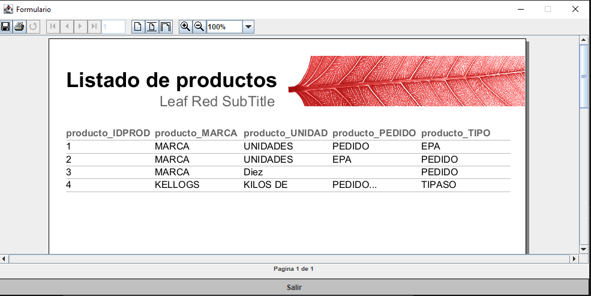

Este apartado nos genera un informe PDF de nuestros productos través del botón de
Ver productos
o a través del menú en
Archivo -> Ver productos

Nos abre una ventanita que nos enseña un informe de la BBDD